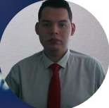

|  | Marco Antonio Mena Landa |
|---|
| CDMX. Del. Miguel Hidalgo | 56 3052 8786 |marcosoftwaredeveloper@gmail.com |
|---|
Ingeniero en informática enfocado en conocimientos en back-end y front-end, he desarrollado varios proyectos. Busco desarrollar mi carrera, contribuyendo con mis habilidades en áreas de programación.
Marzo 2022- Septiembre 2022
Teknei | Desarrollador Trainee
Uso de la herramientas opentext , generar pdfs de manera masiva utilizando lenguanjes como basic y java.
Marzo 2022- Septiembre 2022
Financiera Independencia | Operador Monitor de Aplicaciones
Analizar y reportar a su Coordinador los eventos que se identifiquen en la operación, Elaborar de Monitoreo que identifiquen eventos significativos.
2011-2013 Universidad politécnica del estado de Morelos
2011-2013 Colegio Nacional de Educación Profesional Técnica